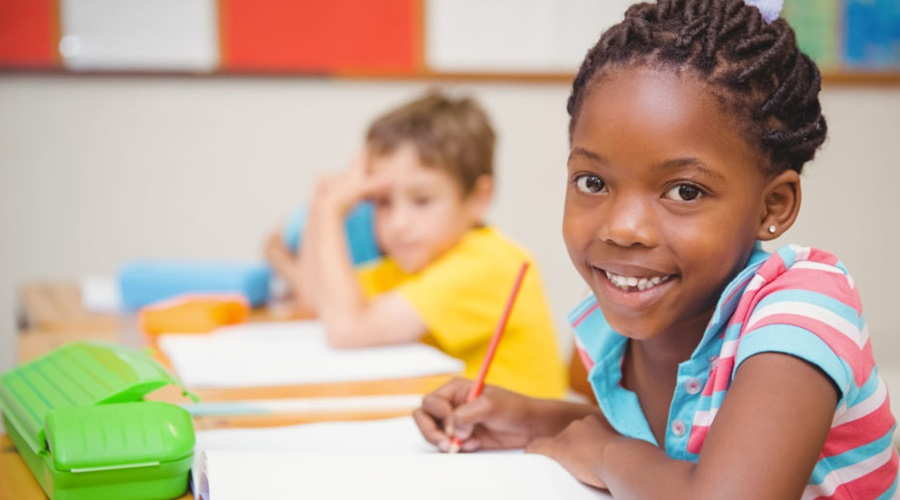
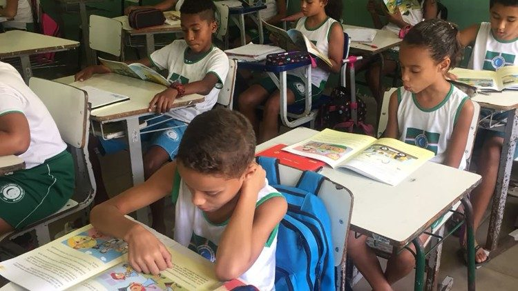

Política:
Política é a atividade desempenhada pelo cidadão quando exerce seus direitos em assuntos públicos através da sua opinião e do seu voto.
A palavra política tem sua origem da palavra grega “polis” que significa “cidade”. Neste sentido, determinava a ação empreendida pelas cidades-estados gregas para normalizar a convivência entre seus habitantes e com as cidades-estados vizinhas.
A política busca um consenso para a convivência pacífica em comunidade. Por isso, ela é necessária porque vivemos em sociedade e porque nem todos os seus membros pensam igual. A política exercida dentro de um mesmo Estado chama-se política interna e entre Estados diferentes, se denomina política externa.
O que é educação política?
A Constituição Cidadã prevê, em seu artigo 205, o preparo para exercício da cidadania como um objetivo da educação brasileira. Desse modo, a educação política é a educação que busca alcançar este objetivo, ou seja, ela é a educação que busca preparar o cidadão para o pleno exercício de sua cidadania.
Porém, o que define o pleno exercício da cidadania? O sociólogo britânico Thomas Marshall defendia que para um cidadão exercer de forma plena a sua cidadania era preciso que ele tivesse acesso aos seus direitos civis, políticos e sociais.
Já a filósofa americana, Hannah Arendt, acrescenta que a cidadania não deve se limitar ao gozo de direitos civis, políticos e sociais, devendo se estender também à capacitação do cidadão para participar de forma efetiva dos espaços públicos.
Assim, pode-se dizer que o pleno exercício da cidadania se relaciona com o gozo de direitos civis, políticos e sociais e com a capacidade do cidadão de participar da vida pública, emitindo suas opiniões e influenciando as tomadas de decisão públicas.
Nesse sentido, a educação política é a educação que promove a capacitação necessária para que o cidadão tenha um repertório que lhe permita compreender as nuances dos debates políticos no Brasil e no mundo. E que também o capacite para participar ativamente da política, de modo a exercer plenamente a sua cidadania.
A educação política nas escolas
A educação política, no Brasil, não é uma disciplina escolar, e, por isso, você provavelmente nunca teve um professor de educação política na escola. Mas provavelmente já estudou conceitos como formas de governo, direito ao voto, o papel de cada um dos três poderes… Todos esses conteúdos que dialogam com o objetivo da capacitação para o exercício da cidadania.
Então, apesar de não existir uma matéria chamada “educação política” na maioria das escolas brasileiras, alguns conteúdos que são essenciais para a formação de um cidadão fazem parte do currículo da educação básica.
Apesar do novo ensino médio ter diminuído a carga horária obrigatória das principais matérias responsáveis pelo maior aprofundamento dos temas relacionados à educação política, como História e Sociologia, algumas escolas adotaram itinerários formativos que buscam aprofundar estes conhecimentos políticos.
Como implementar educação política nas escolas?
Conceitos importantes que se relacionam à educação política já fazem parte da grade curricular prevista pela Base Nacional Comum Curricular (BNCC). Porém, para uma educação poítica efetiva e que realmente tenha compromisso com a formação cidadã é preciso que a educação não se resuma a reproduzir conhecimentos.
Uma educação efetiva para a cidadania precisa ser capaz de desenvolver no aluno seu senso crítico de modo que ela tenha as ferramentas necessárias para participar da sociedade de forma consciente, não se restringindo a apenas reproduzir a lógica de dominação.
Além disso, a educação política pode ser implementada nas escolas, de forma mais aprofundada, através do itinerários formativos do novo ensino médio. Porém, a reforma deixou a critério de cada instituição decidir quais serão as trilhas adotadas por cada escola.
Portanto, se a sua escola ainda não possui uma trilha focada em educação política, você pode conversar com o corpo docente e discente da instituição e cobrar a criação dessa trilha.
Vale lembrar! Por meio do programa Escola da Cidadania Ativa, a Politize! apoia as secretarias estaduais de educação no desenvolvimento de uma Trilha de aprofundamento base de 900 h e de componentes curriculares eletivos alinhados a BNCC, levando a pauta da cidadania ativa para o Ensino Médio.